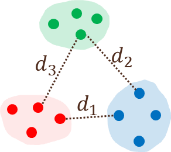

Topic 5 Segmentation
5.1 R Packages and Datasets for Topic 5
library(ggplot2) # Advanced graphing capabilities
library(flextable) # Better HTML Tables
library(dplyr) # Easier programming
library(dendextend) # Nicer dendrograms
library(vtable) # Nicer tables
load("Topic05/ffseg.rdata")5.2 Segmentation Overview
5.2.1 Why segment the market?
- Markets are heterogeneous
- Difficult to meet needs with one marketing mix
- Can create homogeneous segments
- Each segment offered a different marketing mix
5.2.2 Market Segment vs. Segmentation
Market Segment
Subgroup of people or organizations sharing one or more characteristics that cause them to have similar product needs.
Market Segmentation
Process of dividing a market into meaningful, relatively similar, and identifiable segments or groups.
5.2.3 Criteria for Successful Segmentation
Identifiable and Measurable
Characteristics provide a basis for segmentation
Substantial
Large and profitable enough to make it worthwhile
Accessible
Able to receive communications and distributions
Responsive
Respond to marketing efforts and changes in mix
5.2.4 Bases for Consumer Markets
Behavioral Segmentation
- Benefits sought (e.g., quality, taste, convenience, excitement, etc.)
- Product usage (e.g., heavy, light, non, former, first-time, etc.)
- Usage situations (e.g., celebration, emergency, everyday, etc.)
- Price sensitivity (e.g., value-conscious, status-conscious, etc.)
Demographic Segmentation
- Age
- Gender
- Income
- Occupation
- Education
- Ethnicity
- Generation
Psychographic Segmentation
- Personality (e.g., outgoing, shy, materialistic, controlled, etc.)
- Lifestyle (e.g., homebody, couch potato, workaholic, etc.)
- Motives (e.g., safety, status, relaxation, convenience, etc.)
Geographic Segmentation
- Regional
- City size
- Population density
- Block group
- Climate
5.2.4.1 Which base to use?
- Using Geographics or Demographics is easy, but it won’t help determine needs.
- Knowing how a product fits a lifestyle or benefits consumers seek is important, but it won’t help identify specific customers.
- A combination of bases likely works best, but the bases to be used depend on the purpose of segmentation.
5.3 Cluster Analysis
5.3.1 Overview
Cluster analysis classifies objects so that objects are similar to others in the cluster with respect to some predetermined criterion.
- Resulting clusters exhibit:

Figure 5.1: Cluster Example
- Basic steps
- Choose variables (i.e., bases)
- Define measure of similarity
- Develop method for assigning objects
5.3.2 Measures of Similarity
Similarity measure depends on data type
- For continuous data…
Use distance-type measures - For binary data…
Use similarity coefficients - For mixed data…
Use special measures
5.3.2.1 Continuous data
Distance-type measures
- Euclidean: \(\sqrt{(x_{1i}-x_{1j})^2 + \cdots +(x_{ni}-x_{nj})^2}\)
- Squared Euclidean: \((x_{1i}-x_{1j})^2 + \cdots +(x_{ni}-x_{nj})^2\)
- Absolute: \(|x_{1i}-x_{1j}|^2 + \cdots +|x_{ni}-x_{nj}|^2\)
- NOTE: If all variables are continuous and measured on different scales, best to standardize them first
Euclidean Distance Example
- Suppose three individuals rated importance of three attributes
| Person | Price | Quality | Service |
|---|---|---|---|
| Alex | 6 | 5 | 6 |
| Sam | 5 | 1 | 6 |
| Pat | 6 | 6 | 5 |
- Calculate Euclidean Distances between each pair
- Alex/Sam: \(\sqrt{6-5)^2+(5-1)^2+(7-2)^2}=\sqrt{42}=6.48\)
- Alex/Pat: \(\sqrt{6-6)^2+(5-6)^2+(7-5)^2}=\sqrt{5}=2.24\)
- Sam/Pat: \(\sqrt{5-6)^2+(1-6)^2+(2-5)^2}=\sqrt{35}=5.92\)
- Pairwise Similarity Matrix
| Person | Alex | Sam | Pat |
|---|---|---|---|
| Alex | 0 | NA | NA |
| Sam | 6.48 | 0 | NA |
| Pat | 2.24 | 5.92 | 0 |
5.3.2.2 Binary Data
Similarity Coefficients
Based on a \(2×2\) cross-tab between objects

\(a\) = number of variables where \(i\) and \(j\) both had \(1\)s
\(d\) = number of variables where \(i\) and \(j\) both had \(0\)s
\(b\) = number of variables where \(i\) is \(1\) and \(j\) is \(0\)
\(c\) = number of variables where \(i\) is \(0\) and \(j\) is \(1\)Matching coefficient: \((a+d)/(a+b+c+d)\)
Person
Price
Quality
Service
Alex
1
1
1
Sam
1
0
0
Pat
0
0
0
Calculate matching coefficient between each pair
- Alex/Sam: \((1+0)/(1+2+0+0)=1/3=33.3\%\)
- Alex/Pat: \((0+0)/(0+3+0+0)=0/3=0.0\%\)
- Sam/Pat: \((0+2)/(0+1+0+2)=2/3=66.6\%\)
Pairwise similarity matrix
Person
Alex
Sam
Pat
Alex
100%
NA
NA
Sam
33.3%
100%
NA
Pat
0.0%
66.6%
100%
5.3.2.3 Mixed data
Special measures
- Gower coefficent
- Creates a measure between 0 and 1 for each variable
- For continuous variables:
- For each variable, absolute distance divided by range for that variable
- For binary variables:
- Matching as before
5.3.3 Assigning Objects
- Heirarchical: Construct a treelike structure up (agglomerative) or down (divisive) based on similarity of objects
- Partitioning: Assign objects to one of a specified number of clusters based on similarity of object to the cluster
5.3.3.1 Hierarchical: Agglomerative
5.3.3.1.1 Stages
Consider each object as its own cluster
Join two closest objects based on similarity measure and algorithm
Join next two closest objects (individual or cluster)
Repeat step 3 until all items clustered
Figure 5.2: Sample Dendrogram
5.3.3.1.2 Linkage Rules
How to compute distance between clusters?
Four main linkage rules
Single
- Join clusters where minimum distance of any two cases between clusters is smallest
\[\begin{align} \left. \begin{array}{l} d_1 = .55 \\ d_2 = .84 \\ d_3 = .85 \end{array}\right\} \text{Red and Blue clusters will be joined} \end{align}\]Figure 5.3: Single Linkage Visualization
Complete
- Join clusters where maximum distance of any two cases between clusters is smallest
\[\begin{align} \left. \begin{array}{l} d_1 = 1.51 \\ d_2 = 1.51 \\ d_3 = 1.34 \end{array}\right\} \text{Red and Green clusters will be joined} \end{align}\]Figure 5.4: Complete Linkage Visualization
Average
- Minimum average distance between all cases in one cluster and another cluster

Figure 5.5: Average Linkage Visualization
Ward’s
- Join clusters with a minimum increase in the sum of squared distances within all clusters combined
5.3.3.1.3 Problems
- Which linkage rule?
- Ward’s is often a good choice, but may need to look at others based on results
- How many clusters?
- With small samples, dendrograms work well
- With large samples, can use stopping rules
- Consider managerial implications
5.3.3.1.4 How Many Clusters?
- Using a dendrogram for small samples
- Draw horizontal line to visualize clusters easier
Figure 5.6: Horizontal Line Showing 4 Clusters
Figure 5.7: 3-Cluster Solution
Figure 5.8: 4-Cluster Solution
- Use a stopping rule for large samples
- The Duda-Hart stopping rule provides an index value for different cluster solutions
- Large values of the index, combined with small values of pseudo-T-squared values indicate more distinct solutions
Num.Clusters Duda.Hart pseudo.t.2 1 0.8091 177.0092 2 0.8867 56.7367 3 0.8599 58.4966 4 0.9090 30.4322 5 0.8423 37.4369 6 0.8787 24.4393 7 0.8562 26.3746 8 0.8852 16.2166 9 0.7997 27.3073 10 0.8550 17.2916 11 0.8116 19.7330 12 0.8173 18.5591 13 0.8495 15.7674 14 0.8112 16.2956 15 0.8576 13.7770 Partitioning: \(k\)-means
5.3.3.1.5 Stages
- Identify number of clusters desired
- Identify the cluster “seeds”
- Allocate all objects to cluster based on distance from “seed”
- Calculate new cluster centers
- Reallocate items based on distance to cluster centers one at a time
- Repeat 4 & 5 until within-cluster variability is minimized
5.3.3.1.6 Illustration for 3-cluster solution
Ask for 3-cluster solution
Randomly assign cluster seeds
Allocate all objects based on distance to seeds

Calculate new cluster centers
Reallocate items based on distance to cluster centers one at a time

Repeat Step 4: Calculate new cluster centers

Repeat Step 5: Reallocate items based on distance to cluster centers one at a time

Repeat Step 4: Calculate new cluster centers
- At this point, no further reallocation can make the within cluster variance smaller, so this is the best 3-cluster solution
5.3.3.1.7 How many clusters?
- Create a scree plot based on the within sum of squares (WSS) for about 1 to 15 different solutions
- Compare solutions around the scree
- Consider managerial implications
Figure 5.9: Example Scree Plot
5.3.4 Describe the Segments
- Answers the question: How do the clusters differ on relevant dimensions?
- Create a profile using measures of central tendency, dispersion, etc. for variables used in clustering
- Profile clusters using data not included in clustering to get a feel for who is in the clusters
- Can use statistical techiniques to help identify characteristics that predict cluster membership
5.4 Segmentation (Cluster Analysis) Example
5.4.1 Overview
Goal
- Segment students based on importance of attributes when choosing a fast food restaurant
- Keep number of clusters manageable
Bases: Attribute Importance
- Cleanliness (\(clean\))
- Variety (\(variety\))
- Food Quality (\(quality\))
- Location (\(location\))
- Service Speed (\(speed\))
- Price (\(price\))
- Healthy options (\(healthy\))
- Friendliness (\(friendly\))
Additional Information
- Frequency of eating out
- Class level
- Meal plan
- Gender
- Living location
- College
5.4.2 Examine the Data
| Variable | N | Mean | Std. Dev. | Min | Pctl. 25 | Pctl. 75 | Max |
|---|---|---|---|---|---|---|---|
| clean | 752 | 4.093 | 0.898 | 1 | 4 | 5 | 5 |
| variety | 752 | 3.339 | 0.989 | 1 | 3 | 4 | 5 |
| quality | 752 | 4.165 | 0.814 | 1 | 4 | 5 | 5 |
| location | 752 | 3.701 | 0.971 | 1 | 3 | 4 | 5 |
| speed | 752 | 3.652 | 0.9 | 1 | 3 | 4 | 5 |
| healthy | 752 | 3.045 | 1.204 | 1 | 2 | 4 | 5 |
| price | 752 | 4.004 | 0.903 | 1 | 3 | 5 | 5 |
| friendly | 752 | 3.318 | 1.024 | 1 | 3 | 4 | 5 |
- Nothing out of the ordinary for survey data
5.4.3 Hierarchical Cluster Analysis
Distance measure: Euclidean
- All variables are continuous and on the same scale, but will be standardized anyway
Linkage method: Ward’s
Over \(750\) cases… So dendrogram won’t help
Calculate Duda-Hart index for \(1\) to \(15\) clusters
- Look at top \(5\) index values
- \(2\), \(3\), \(4\), and \(6\) cluster solutions seem like good candidates to explore
Table 5.2: Duda-Hart Index (R code)
Num.Clusters
Duda.Hart
pseudo.t.2
1
0.8392
143.7320
2
0.8974
63.8291
3
0.8792
55.2532
4
0.8560
43.4065
5
0.8537
26.3963
6
0.8680
27.6823
7
0.8973
21.7445
8
0.8581
23.4818
9
0.8527
19.1770
10
0.8345
24.7925
Examine dendrogram of top 6 branches only
Figure 5.10: Dendrogram with Top 6 Branches Only (R code)
Examine cluster sizes for different cluster solutions
- Overall, 4-cluster solution is chosen
- All clusters are of decent size and no one cluster is too large
Table 5.3: Cluster Sizes for Different \(k\) Solutions (R code)
Cluster
k_2_Count
k_3_Count
k_4_Count
k_6_Count
1
560
404
260
192
2
192
192
192
184
3
NA
156
156
144
4
NA
NA
144
127
5
NA
NA
NA
76
6
NA
NA
NA
29
Cluster
k_2_Percent
k_3_Percent
k_4_Percent
k_6_Percent
1
74.47
53.72
34.57
25.53
2
25.53
25.53
25.53
24.47
3
NA
20.74
20.74
19.15
4
NA
NA
19.15
16.89
5
NA
NA
NA
10.11
6
NA
NA
NA
3.86
- Overall, 4-cluster solution is chosen
Describe segments using cluster variables (table and chart)
- Cluster \(1\) seems to rate most everything as important, but especially \(clean\), \(quality\), \(price\), and \(location\)
- Cluster \(4\) doesn’t seem to think much is important, except maybe \(price\), and really doesn’t care about \(healthy\), \(friendly\), and \(variety\)
- Cluster \(3\) rates \(quality\), \(clean\) and somewhat \(healthy\) as important, but not much else
- Cluster \(2\) doesn’t have any attributes that are rated too high or too low compared to the other clusters
Table 5.4: Cluster Variable Means by Cluster (R code)
Cluster
clean
variety
quality
location
speed
healthy
price
friendly
1
4.69
3.75
4.81
4.41
4.29
3.84
4.54
4.12
2
4.12
3.30
4.09
3.88
3.71
2.67
4.03
3.36
3
4.51
3.83
4.65
2.99
3.27
4.03
3.83
3.47
4
3.27
2.69
3.38
3.42
3.34
2.17
3.67
2.49
Figure 5.11: Mean Attribute Importance by Cluster (R code)
Describe segments using non-cluster variables
- Only the variable \(eatin\) (1 = Prefer to eat in; 5 = Prefer Get to Go) and \(gender\) showed significant differences between clusters
- Cluster \(3\) was significantly more likely to want to eat in than Clusters \(2\) and \(4\)
- Cluster \(4\) was significantly more likely to be male than the other clusters
Table 5.5: Eat-In and Gender Means by Cluster (R code)
Cluster
eatin
1
4.03
2
4.30
3
3.82
4
4.48
Cluster
Female
1
0.78
2
0.71
3
0.81
4
0.60
- Only the variable \(eatin\) (1 = Prefer to eat in; 5 = Prefer Get to Go) and \(gender\) showed significant differences between clusters
5.4.4 k-Means Cluster Analysis
Distance Measure
- All variables are continuous and on the same scale, but will be standardized anyway
Calculate WSS to create a scree plot for \(1\) to \(15\) cluster solutions
Somewhere between \(3\) and \(5\) clusters looks best
Figure 5.12: Scree Plot for Fast Food Data (R code)
Quick examination of \(3\), \(4\), and \(5\) cluster solutions
Each solution has good sized clusters
- Use \(3\) cluster solution because cluster sizes closest to each other…
- And we saw a \(4\) cluster solution using hierarchical agglomerative clustering
Table 5.6: Cluster Sizes 3, 4, and 5 Cluster Solutions (R code)
Num_Clusters
k_3_Count
k_4_Count
k_5_Count
1
266
269
252
2
261
174
149
3
225
164
138
4
NA
145
113
5
NA
NA
100
</tr>- Use \(3\) cluster solution because cluster sizes closest to each other…
Examine cluster centers (table and chart)
- Similar to describing segments using cluster variables
- Cluster \(1\) doesn’t think much is important other than \(location\) and \(price\)
- Cluster \(2\) thinks most everything is important
- Cluster \(3\) thinks \(clean\), \(quality\), and \(healthy\) are much more important than other attributes
Table 5.7: Cluster Centers for 3 Cluster Solution (R code)
clean
variety
quality
location
speed
healthy
price
friendly
Cluster
-0.8760
-0.4746
-0.8286
-0.0075
-0.2216
-0.7727
-0.0256
-0.6548
1
0.5076
0.5694
0.5503
0.5832
0.6334
0.4340
0.5615
0.5158
2
0.4161
-0.1227
0.3107
-0.6807
-0.4917
0.3833
-0.6341
0.1497
3
Figure 5.13: Cluster Centers by Cluster (R code)
Describe segments using non-cluster variables
- Only the variables \(eatin\) (1 = Prefer to eat in; 5 = Prefer Get to Go), \(gender\), and \(live\) showed significant differences between clusters
- Cluster \(3\) was significantly more likely to want to eat in than both other clusters
- Cluster \(1\) was significantly more likely to be male than both other clusters
- Cluster \(3\) was significantly more likely to be a commuter than both other clusters
Table 5.8: Eat-In, Gender and Live Means by Cluster (R code)
Cluster
eatin
1
4.40
2
4.29
3
3.85
Cluster
Female
1
0.60
2
0.81
3
0.73
Cluster
Commuter
Off.Campus
On.Campus
1
0.08
0.45
0.47
2
0.08
0.46
0.45
3
0.16
0.40
0.44
- Only the variables \(eatin\) (1 = Prefer to eat in; 5 = Prefer Get to Go), \(gender\), and \(live\) showed significant differences between clusters
5.5 Suggested Readings
- Marketing Data Science (2015). Miller, Thomas W.
- BGSU Library Link:
http://maurice.bgsu.edu:2083/record=b41416968~S0 - eBook through BGSU Library:
https://learning.oreilly.com/library/view/marketing-data-science/9780133887662/?ar=
Note: Might need to create an account; select “Not Listed. Click here” from the “Select your institution” drop down box. Use your BGSU email to create the account. - Chapter 4: Finding New Customers
- BGSU Library Link:
- Principles of Marketing Engineering and Analytics, 3rd Edition (2017). Lilien, Gary L., Rangaswamy, Arvind, and De Bruyn, Arnaud.
- Course reserves
- Pages 75-97 from Chapter 3: Segmentation and Targeting
- Course reserves
- Multivariate Data Analysis. Hair, Joseph F.; Black, William C.; Babin, Barry J.; Anderson, Rolph E.
- 7th Edition: Search for “multivariate data analysis 7th edition hair”
- Chapter 8: Cluster Analysis
- 5th Edition: Course reserves
- Chapter 9: Cluster Analysis
- 7th Edition: Search for “multivariate data analysis 7th edition hair”
5.6 R Code
Figure 5.10
# Load 'myhc.R' user defined function
source("Topic05/myhc.R")
out <- myhc(segdata, # Dataframe with cluster variables
dist="euc", # Use 'euclidean' distance measure
method="ward", # Use 'Wards' linkage
cuts=c(2,3,4,6), # Get data for 4 cut levels
clustop="N") # Do not get Duda-Hart
out$kcount # Table with cluster sizes
out$kperc # Table with cluster size proportionsFigure 5.11
library(reshape2) # Used to covert data from wide to long
# Convert 'wide' table to 'long' table
sumsegl <- melt(outseg$means, # Wide table of summary statistics
id.vars="Cluster", # ID variable
variable.name="attr", # Column name identifying attribute
value.name="mean") # Column name identifying value
# Plot data
sumsegl %>% ggplot(aes(x=attr, y=mean, fill=Cluster)) +
geom_col(position="dodge") +
coord_cartesian(ylim=c(1,7)) +
scale_y_continuous(breaks=seq(1,7,1)) +
geom_text(aes(label=round(mean,2)), hjust=1.1, fontface="bold",
angle=90, position=position_dodge(width=.9)) +
theme(legend.position="bottom") +
labs(x="Attribute", y="Mean Importance", fill="Cluster")Figure 5.12
source("Topic05/wssplot.R") # User defined function for scree plot
wssplot(segdata, # Standardized data from earlier
15, # Max clusters
seed=4320) # Random number seedFigure 5.13
# outkc was created using the code for thetable
outkc$plotTable 5.1
# Create df with attribute importance variables
segdata <- ffseg %>%
select(clean, variety, quality, location, speed, healthy, price, friendly)
# Create summary table with package 'vtable' (not availalbe in virtual env.)
sumtable(segdata, out="return") %>% kable(caption=NULL)Table 5.2
# Stardarize data using 'scale()' function
segdata <- data.frame(scale(segdata))
# Use 'clustop.R' user defined function
# Requires package 'NbClust', which isn't availabe in virtual env.
source("TOpic05/clustop.R")
library(NbClust)
dh <- clustop(segdata, # Dataframe to with cluster variables
dist="euc", # Use 'euclidean' distance measure
method="ward", # Use 'Wards' linkage
minclust=1, maxclust=10) # Only complete for up to 10 clusters
dhTable 5.3
# 'out' was a list of two data frame ('kcount' and 'kperc') returned from the
# call to the 'myhc' user defined function
out$kcount # Table with cluster sizes
out$kperc # Table with cluster size proportionsTable 5.4
ffseg$c4 <- as.factor(cutree(out$hc,4)) # Add cluster membership to original
# Create object with segmentation variables listed
segvars <- c("clean", "variety", "quality",
"location", "speed", "healthy",
"price", "friendly")
# Use 'cldescr.R' user defined function
source("Topic05/cldescr.R")
outseg <- cldescr(ffseg, # Orig data with cluster membership added
segvars, # Segmentation variables
"C", # Indication that variables are continuous
"c4") # Cluster membership variable name
# Table of means
outseg$meansTable 5.5
# Use 'cldescr.R' user defined function
outnseg <- cldescr(ffseg, # Orig data with cluster membership added
"eatin", # Prefer to eat in (1) vs. get to go (5)
"C", # Indication that variable is continuous
"c4") # Cluster membership variable name
# Table of means
outnseg$means
outnseg <- cldescr(ffseg, # Orig data with cluster membership added
"gender", # Male or Female
"F", # Indication that variable is factor
"c4") # Cluster membership variable name
# Table of means
outnseg$meansTable 5.6
# 'ksize.R' must first be sourced (if not already)
source("Topic05/ksize.R")
ks <- ksize(segdata, # Scaled cluster variables from earlier
centers=c(3,4,5), # Request for 3, 4, and 5 cluster solutions
nstart=25, # Request 25 random starting sets
seed=4320) # Set seed to 4320 for reproducible results
ks$kcount
ks$kpercTable 5.7
# Use user-defined function 'kcenters.R'
source("Topic05/kcenters.R")
set.seed(4320) # Match seed from above
k3 <- kmeans(segdata, # Scaled segmentation variables
centers=3, # 3 cluster solution
nstart=25) # 25 random starting sets
outkc <- kcenters(k3) # Call to 'kcenters' passing the 'k3' cluster object
# outkc contains two objects: 'table' and 'plot'
outkc$table # Print tableTable 5.8
# Add cluster membership to original data
fseg$k3 <- factor(k3$cluster)
# Use 'cldescr.R' user defined function
outk3seg <- cldescr(ffseg, # Orig data with cluster membership added
"eatin", # Prefer to eat in (1) vs. get to go (5)
"C", # Indication that variable is continuous
"k3") # Cluster membership variable name
# Table of means
outk3seg$means
outk3seg <- cldescr(ffseg, # Orig data with cluster membership added
"gender", # Male or Female
"F", # Indication that variable is factor
"k3") # Cluster membership variable name
# Table of means
outk3seg$means
outk3seg <- cldescr(ffseg, # Orig data with cluster membership added
"live", # Where they live
"F", # Indication that variable is factor
"k3") # Cluster membership variable name
# Table of means
outk3seg$means